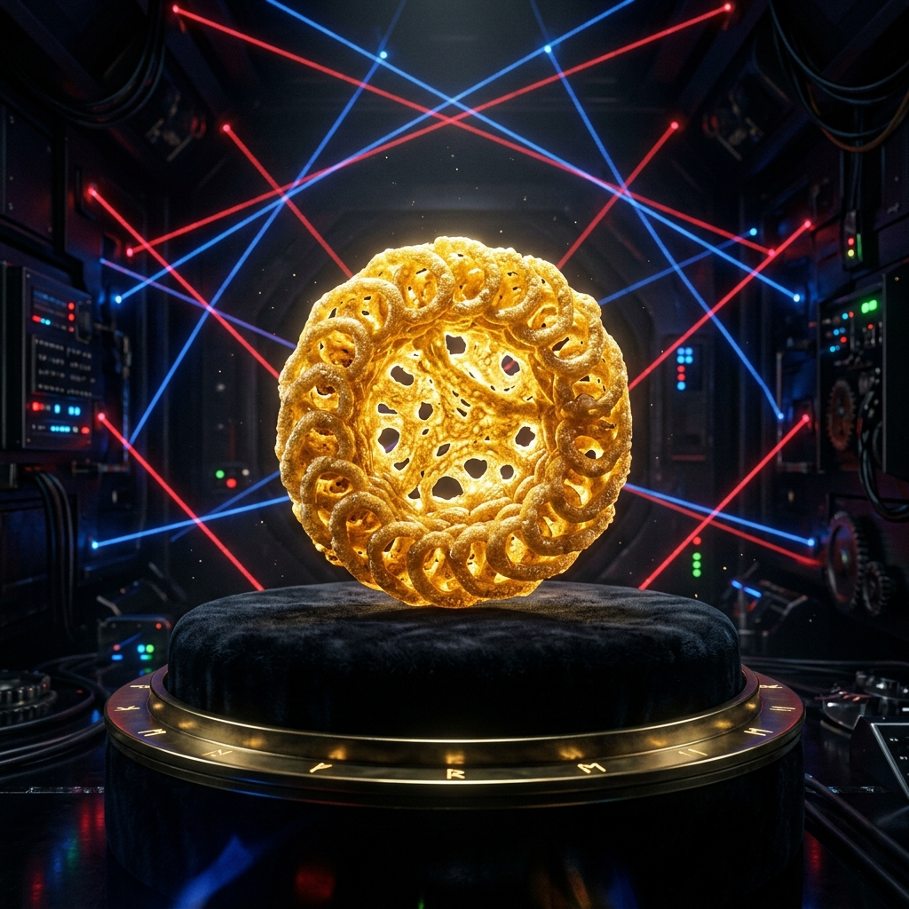

Sejarah Panjang Kerupuk Kami
Dipublikasikan: 10 Agustus 2026

PT. Kerupuk Renyah Nusantara telah berdiri sejak zaman dahulu kala. Resep rahasia kerupuk
kami dijaga ketat oleh tiga lapis keamanan militer. Tidak sembarang orang bisa masuk ke
pabrik kami dan mencicipi kerupuk edisi terbatas kami yang konon bisa membuat penikmatnya
melayang.
Kerupuk kami digoreng menggunakan minyak sawit murni yang dipanaskan menggunakan teknologi
fusi nuklir. Hal ini menjamin tingkat kerenyahan yang tak tertandingi oleh pabrik kerupuk
mana pun di dunia ini. Suara kriuknya kabarnya bisa terdengar hingga radius 5 kilometer.
Mengapa Kerupuk Kami Sangat Mahal?
Dipublikasikan: 8 Agustus 2026
Banyak pelanggan awam yang memprotes harga kerupuk kami yang mencapai jutaan rupiah per
keping. Mereka tidak tahu bahwa setiap kerupuk diukir secara manual oleh seniman pahat
profesional menggunakan laser mikroskopis untuk memastikan bentuk bulat sempurna.
Selain itu, proses penjemuran memakan waktu 40 hari 40 malam di puncak pegunungan Himalaya
agar terpapar langsung oleh energi kosmik. Itulah sebabnya kerupuk kami memiliki aura mistis
tersendiri.
Peringatan Keamanan Pabrik
Dipublikasikan: 5 Agustus 2026
Bagi para penyusup yang mencoba mencuri kerupuk eksperimental kami, berhati-hatilah! Pabrik
kami dilengkapi dengan sistem keamanan sensor gerak tingkat militer. Jika terdeteksi ada
yang mencoba mencuri kerupuk dari brankas kami, sistem alarm otomatis akan mengunci seluruh
pintu keluar secara permanen.
Tonton rekaman CCTV penyusup bulan lalu yang tertangkap sistem kami:
https://www.youtube.com/watch?v=gT5c0zP1h2s
Sekali Anda memicu alarm, kerupuk tersebut akan dilontarkan secara acak ke seluruh ruangan
menggunakan meriam angin untuk mencegah pencurian. Kami sarankan Anda membaca buku panduan
keselamatan pengunjung sebelum nekat berkeliling.
Tips Menikmati Kerupuk di Musim Hujan
Dipublikasikan: 1 Agustus 2026
Musim hujan adalah musuh alami kerupuk. Kelembapan udara bisa menghancurkan mahakarya renyah
kami hanya dalam hitungan menit. Selalu simpan kerupuk Anda di dalam brankas kedap udara
yang dilengkapi dengan pengering silika gel industri.